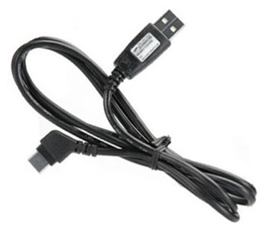

USB-кабель Samsung APCBS10
Дата кабель Samsung APCBS10 для подключения телефона к компьютеру – это высокая скорость передачи данных по протоколу USB 2.0. APCBS10 позволяет также заряжать совместимые телефоны Samsung от компьютера. А установив специальное программное обеспечение, вы сможете управлять через компьютер функциями телефона. Используется стандартный разъём S20pin, благодаря которому кабель самсунг совместим со следующими моделями.
тип подключения: USB 2.0
разьем - S20pin/USB
высокая скорость передачи
Подходит для модели 2710.

Цена Samsung APCBS10: 72 грн.